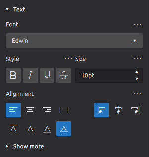
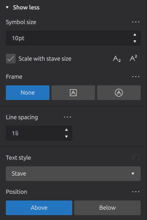

格式化文本
概述
格式化层级
Musescore Studio 中的排版和格式化有 2 个主要层级。请先阅读模板和样式。文本对象还有更细的层级：
- 层级 1：乐谱文件中每个单独文本对象的属性：
- 文本对象内单个字符的格式化；
- 包含所有字符的对象的格式化。
- 层级 2
- "特定类型对象的样式"：你可以在'样式'窗口：左侧窗格中更改它们的值
- "特定类型对象内文本的样式"：你可以在'样式'窗口：左侧窗格'文本样式'下的项目内更改它们的值
文本对象的外观和功能
\ 乐谱文件中大多数对象的最终外观和功能由以下因素决定：
- 字符没有任何特定格式。当格式添加到它们时，它们将始终被使用。请参阅下面的更改字符。
- 文本对象没有任何特定属性。当属性在属性面板中设置时，它们将始终被使用，除了已经具有自己格式的字符。有关详细信息，请参阅下面的"文本属性"。
- 功能设置：乐谱上的所有对象都使用"特定类型对象的样式"中的值，此行为无法更改，但你可以编辑其中的值。
- 视觉设置：
- 乐谱上的对象自动使用适当的"特定类型对象内文本的样式"中的值，例如"和弦符号内文本的样式"、"奇数行歌词内文本的样式"。此行为可以通过属性面板中的更多... > 文本样式属性更改。你还可以利用 12 个自定义样式。
- "谱表文本内文本的样式"是特殊的。 乐谱上每个与文本相关的对象都使用它的值，除非被覆盖，此行为无法更改，但你可以编辑其中的值。
- 一部分字符始终使用'样式'窗口 > 乐谱 中的字体设置："音乐符号字体"（8 个选项）：诸如 Segno、Coda、八度线、力度字形（如 mf）以及某些特殊字符等音乐字形。请参阅 Musescore 3 手册字体（与 musescore 4.1.1 基本相同，但已升级并添加了 2 个选项）。
属性面板中的选项根据当前选择的不同而表现不同。
"字体"、"样式"、"大小"、"下标和上标"既是对象属性，也是单个字符的格式化选项。当你使用属性面板更改一个对象时，单个字符上不兼容的格式会被移除。
"对齐"、"框架"、"文本样式"是对象属性。当你选中单个字符并在属性面板中更改这些选项时，更改的是对象属性。
更改字符的格式
要编辑文本内容，请改阅文本的输入与编辑。
使用属性面板更改单个字符的格式。Musescore 4 更新了 Musescore 2 和 Musescore 3 中存在的检查器，并将文本工具栏（文本编辑）的功能集成到属性面板中。
- 使用以下方法之一进入文本编辑模式：
* 双击文本对象。
* 选中对象并按 F2 或 Alt+Shift+E
* 右键单击元素并选择
编辑元素 - 高亮显示字符
- 在属性面板的文本部分应用格式，和/或使用键盘快捷键（请参阅编辑文本）。
更改文本对象的格式

单击查看更多可以看到：

要编辑文本内容，请改阅文本的输入与编辑。
使用属性面板更改文本对象的格式，这可能会更改其中所有字符：
- 选中乐谱中的文本对象
- 在属性面板的文本部分中编辑设置。
许多属性与大多数文字处理器类似，但某些特殊设置会在单击查看更多后显示：
- 缩放或符号大小：文本中音乐符号的缩放。根据所选文本对象的类型，显示缩放（以百分比）或符号大小（以磅）。
- 随谱表大小缩放：文本大小是否与其谱表成比例变化，请参阅页面排版概念。
- 文本样式：更改乐谱上文本对象所使用的样式，请参阅下文。
- 位置：在谱表上方或下方，请参阅下文。
更改乐谱上文本对象所使用的样式
在属性面板中，使用 更多 下的文本样式属性。格式化的概念在概述中已解释。只能更改乐谱上文本对象所使用的"特定类型对象内文本的样式"，其中包括 "User-1" ... "User-12"，请参阅下文。请参阅模板和样式。
位置
属性面板用于为文本对象分配格式。当文本对象被更改时，其中所有字符可能都会更改。当字符被选中时，属性面板也用于为文本对象内的单个字符分配格式。
重要的是要知道，即使文本对象内的字符被选中，属性面板上显示的某些属性仍然是文本对象的设置，而不是字符属性。 其中包括位置属性。
在属性面板中，使用 更多 下的位置属性来更改文本对象的排版。如果该类型对象存在覆盖选项，它位于"特定类型对象的样式"中，而不在"特定类型对象内文本的样式"中，请参阅下面的"更改样式内的值"部分。另请参阅主章节模板和样式。
更改样式内的值
请先了解模板和样式。要更改样式内的值，请使用"样式"窗口：格式→样式。
- "特定类型对象的样式"：你可以在'样式'窗口：左侧窗格中更改它们的值
- "特定类型对象内文本的样式"：你可以在'样式'窗口：左侧窗格'文本样式'下的项目内更改它们的值，或
- 使用属性面板中更高效的方式：
- 选中使用该样式的乐谱对象；
- 编辑一个属性；
- 单击属性上方的省略号（…）并选择"另存为此乐谱的默认样式"。
- 根据需要为其他属性重复此操作。
更改 User-1 到 User-12 样式内的值
要将视觉设置值分配给自定义样式："User-1" 到 "User-12"，请使用"样式"窗口：格式→样式 > 文本样式 > User-1 ... User-12